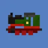

Home
Download
Create
Wiki
Table Of Contents:
- 1.7.10
- 1.12
- 1.6
- 1.4
- Legacy versions
- maps
- 3rd Party add-ons
- Recommended mods
1.7.10
Curseforge
(stable)
Github via nightly
(Experimental)
Github
(Source Code)
1.12.2
Github, Unavailable
(Compile failure)
Github
(Source Code)
1.6
Curseforge
1.6.4
(stable)
Curseforge
1.6.2
(stable)
Github
1.6.4
(Source Code)
1.4
Curseforge
1.4.6
(stable)
Curseforge
1.4.5
(stable)
Legacy

1.3.2
(stable)
1.1.0
(stable)
Maps
A Map by Spitfire4466
1.6.4
Giant map by EmpireRail
1.6.4
Giant map by EmpireRail
1.7.10
Traincraft America by TrainCrafter
1.7.10
Recommended Mods
Railcraft
Utility rails and blocks
Thermal Dynamics
Fluxducts work as overhead wires
and under the rails
Immersive Railroading
Another awesome train mod by an awesome dev.
Not for weak computers.
Fexcraft Vehicles
Awesome vehicle mod by an awesome dev.
Creator of our FMT modeling tool.
Create
Crazy customization options
you can even make working trains.
Millenaire
Better towns and villagers than latest ever could dream of.